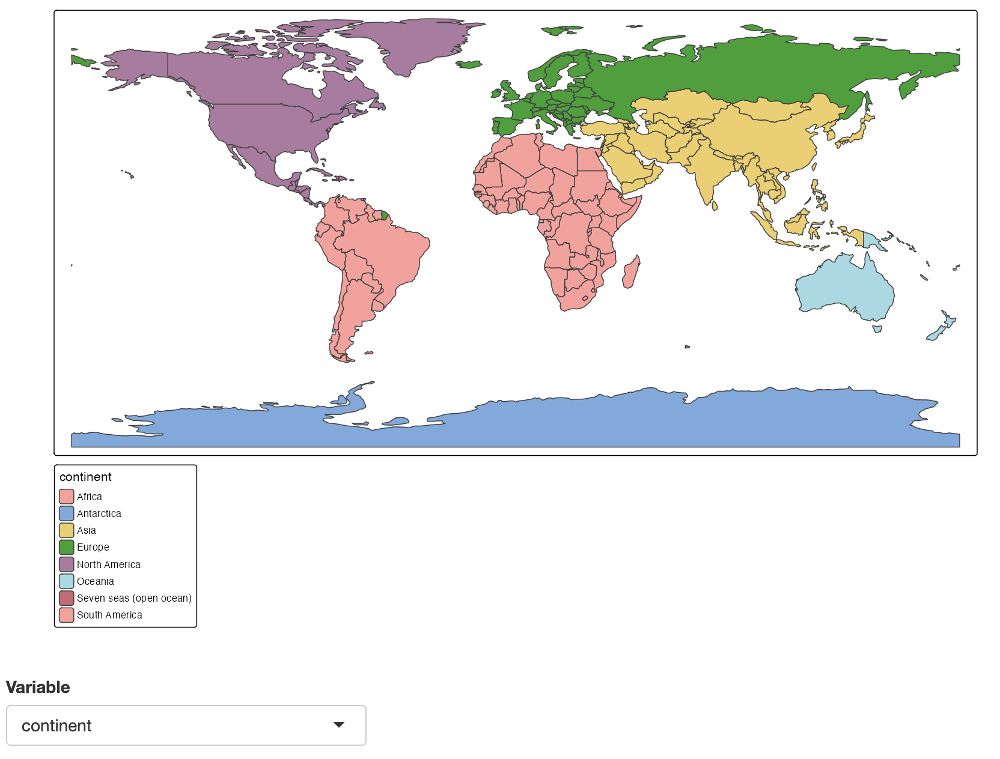

Introductiuon
Integration with shiny is straightforward. The functions tmapOutput() and renderTmap() are similar to shiny::plotOutput() and shiny::renderPlot() respectively.
As an example, let’s create a shiny app where the user selects a variable for which a choropleth/categorical map is drawn. The choise set of variables is:
(world_vars = setdiff(names(World), c("iso_a3", "name", "sovereignt", "geometry")))
#> [1] "continent" "area" "pop_est" "pop_est_dens" "economy"
#> [6] "income_grp" "gdp_cap_est" "life_exp" "well_being" "footprint"
#> [11] "inequality" "HPI"Plot mode
We recommend to use zindex for each tmap layer (such as tm_polygons()) to make sure the position remains fixed.

Figure 1: Shiny app with tmap in plot mode
tmap_mode("plot")
shinyApp(
ui = fluidPage(
tmapOutput("map", height = "600px"),
selectInput("var", "Variable", world_vars)
),
server <- function(input, output, session) {
output$map <- renderTmap({
tm_shape(World) +
tm_polygons(input$var, zindex = 401)
})
}
)View mode
For view mode, we can additionally make use of tmapProxy(). This enables users to update the map without a complete re-render; the zoom window will not be reset.

Figure 2: Shiny app with tmap in view mode
tmap_mode("view")
shinyApp(
ui = fluidPage(
tmapOutput("map", height = "600px"),
selectInput("var", "Variable", world_vars)
),
server <- function(input, output, session) {
output$map <- renderTmap({
tm_shape(World, id = "iso_a3") +
tm_polygons(world_vars[1], zindex = 401)
})
observe({
var <- input$var
tmapProxy("map", session, {
tm_remove_layer(401) +
tm_shape(World, id = "iso_a3") +
tm_polygons(var, zindex = 401)
})
})
},options = list(launch.browser=TRUE)
)